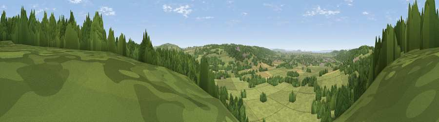

Viewpoint near Failand
#13577 in England · top 22% of its area beats it · near FailandWhere it is
The exact computed spot (ST 51225 71175). Click the marker for map links.
The view, rendered

A 360° render of this exact spot computed from the terrain model, tree cover and land cover — summer colours, afternoon light, calibrated against photographs of famous viewpoints. Real trees, hedges and buildings will differ in detail.
The panorama
Grey silhouette: terrain skyline in each direction (720 bearings, Earth curvature and refraction included). Dashed green: skyline with trees (+15 m) and buildings (+8 m) as obstacles. Blue strip: how far the ground is visible on each bearing.
Where the view opens
Wedge length = distance to the farthest visible ground on that bearing (vegetation-aware). Rings at 10, 25 and 50 km.
What fills the view
61% grassland · 32% woodland · 4% cropland · 2% built-up
Angular shares of the visible panorama (visual magnitude), not map area. Landscape diversity 0.39 (0–1 Shannon).
Key numbers
More beautiful places nearby
The staircase of upgrades: each row has a higher view potential than everything closer. Driving times are estimates from straight-line distance, calibrated against real road routing — check an actual route before setting out.
| Place | Direction | Drive | Score |
|---|---|---|---|
| Viewpoint near Wraxall | WNW · 2 km | ~4 min | 63.2 |
| Viewpoint near Portbury | NW · 4 km | ~8 min | 63.6 |
| Viewpoint near Backwell | SW · 5 km | ~11 min | 65.5 |
| Dundry Hill | SE · 6 km | ~13 min | 72.4 |
| Viewpoint near Norton Malreward | ESE · 9 km | ~19 min | 72.9 |
| Dial Hill | W · 10 km | ~20 min | 74.9 |
| Beacon Batch | S · 14 km | ~26 min | 79.4 |
| Bleadon Hill [Loxton Hill] | SW · 20 km | ~34 min | 79.6 |
51.43746, -2.70309 · source: screening · position refined by local search. Computed location — check access rights before visiting.